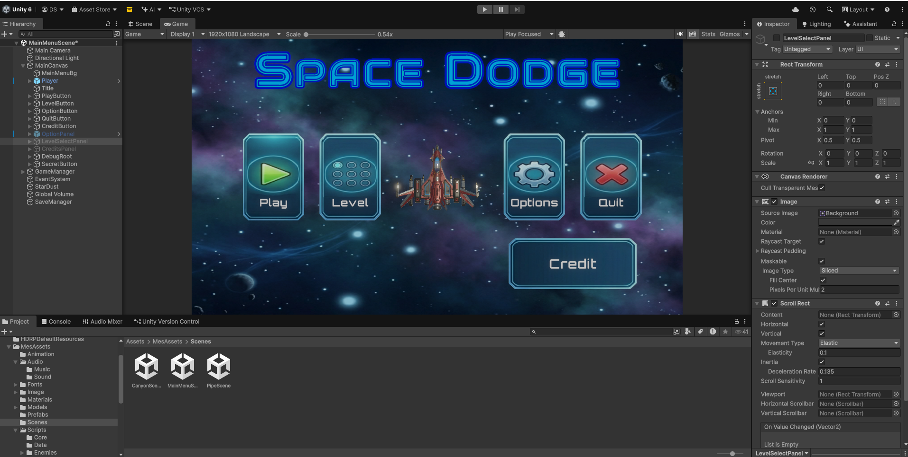
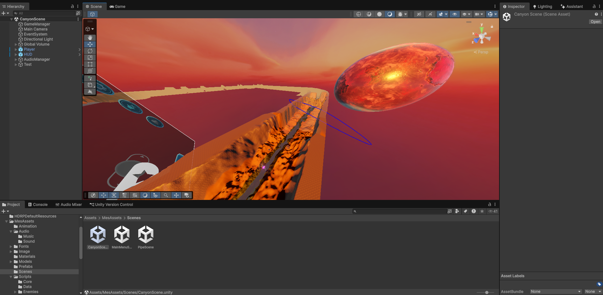
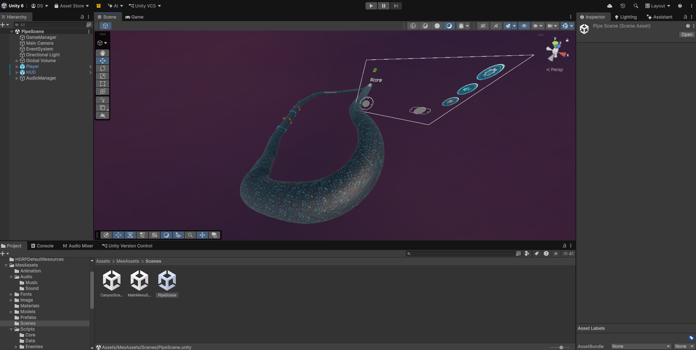

Démo gameplay
Le jeu
Space Dodge est un jeu d'action en 3D, solo, dans un décor de science-fiction. Le principe : esquiver les obstacles et tenir le plus longtemps possible. Le jeu est pensé pour le mobile et ses mécaniques interactives sont adaptées à l'écran tactile.
Le menu principal propose cinq entrées : Play, Level (sélection de niveau), Options, Quit et Credit. Un score est affiché en cours de partie.
Deux environnements sont déjà construits : CanyonScene, un canyon sous un ciel rouge avec une planète en fond, et PipeScene, un tunnel courbe en forme de tuyau.
Captures



Ces captures viennent de l'éditeur Unity, pas d'un téléphone. La vidéo ci-dessus montre le jeu en conditions réelles.
Projet Unity
Le projet est organisé en trois scènes : MainMenuScene, CanyonScene et PipeScene. Les scènes de jeu partagent la même base d'objets : GameManager, Player, HUD et AudioManager. Le menu principal ajoute un SaveManager et un effet de particules StarDust.
Côté code, les scripts sont rangés par dossiers : Core, Data, Enemies, entre autres.
Télécharger
La version Android (SpaceDodgeV0.0.3.apk, 232 Mo) est hébergée sur itch.io, en prix libre. GitHub n'accepte pas les fichiers de cette taille, donc elle n'est pas dans ce dépôt.
Android demande d'autoriser l'installation d'applications hors Play Store pour installer un APK.
Page itch.io de Space Dodge ↗Transparence
La page itch.io indique que le projet a été réalisé avec une assistance par IA pour les sons.